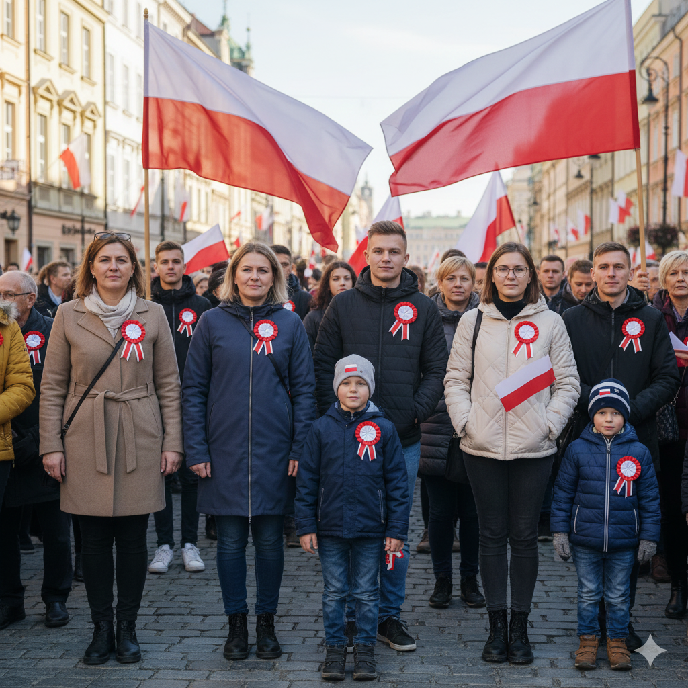

Symbole, które łączą. Tradycyjne rozety i nowoczesne flagi-przypinki.
Elegancka, okrągła kokarda narodowa bez ogonków. Styl retro, idealny do garnituru i płaszcza.
4,90 zł / szt.
Dyskretna flaga na bluzę lub kurtkę. Wykonana z metalu lub usztywnianej wstążki.
3,50 zł / szt.
Nasze produkty powstają z myślą o tych, którzy chcą manifestować swoją polskość w sposób godny i estetyczny. Niezależnie czy wybierzesz klasyczną rozetę, czy nowoczesną mini-flagę – nosisz symbol wolności.
Ten konkretny model to klasyczna rozeta (okrągła) bez tasiemek ("ogonków"). Dzięki temu jest bardziej zwarty i elegancki.
Nasze mini-flagi oferujemy z zapięciem magnetycznym (nie przebija materiału) lub na cienką igłę typu pins, która jest bezpieczna dla większości tkanin.
Tak, dla szkół, urzędów i firm wystawiamy pełne faktury VAT oraz oferujemy odroczony termin płatności.